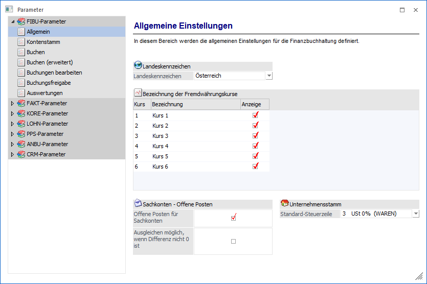
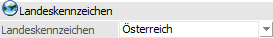
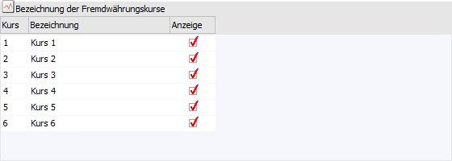
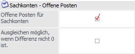
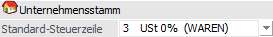

Über den Bereich "FIBU-Parameter - Allgemein" können allgemeine Einstellungen für die Finanzbuchhaltung vorgenommen werden.
Hinweis
Standardmäßig wird das Fenster in einem "Lesemodus" geöffnet, d.h. es können die bestehenden Einstellungen kontrolliert, Änderungen allerdings nicht durchgeführt werden. Hierfür muss zunächst mit Hilfe des Buttons "Bearbeiten" der "Bearbeitungsmodus" aktiviert werden. Alternativ kann diese Aktivierung auch über das Kontextmenü der rechten Maustaste (Funktion "Applikation xxx bearbeiten") erfolgen.

Landeskennzeichen

Ø Landeskennzeichen
Aus der Auswahlbox kann das gewünschte Land ausgewählt werden. Durch die Auswahl erfolgt die Steuerung des Andrucks länderspezifischer Felder wie z.B. der DVR-Nummer, Steuernummer, etc..
Daneben steuert das Länderkennzeichen bei gewissen Auswertungen (Zahlungsverkehr und Mahnung) das generelle Formular, welches für den Ausdruck verwendet werden soll.
Folgende Länder stehen derzeit zur Auswahl:
ü Österreich
ü Deutschland
ü Italien
ü Kroatien
ü Polen
ü Tschechien
ü Ungarn
ü Rumänien
ü Albanien
ü Iran
ü USA
ü Zypern
Hinweis
Wenn dem Mandanten das Länderkennzeichen "Ungarn", "Tschechien" oder "Zypern" zugeordnet wurde, dann wird im Fenster "USt-Voranmeldung" in WinLine FIBU eine Tabelle für die Eingabe von zusätzlichen Informationen im UVA-Formular-Kopfbereich eingeblendet. Diese zusätzlichen Felder stehen auch im jeweiligen UVA-Formular als Variablen zum Andrucken bzw. für Berechnungen zur Verfügung.
Hinweis zu den Unterscheidungsmerkmalen - Auszug
ü Österreich ist der Standard (inkl. DVR-Nummer und Steuernummer)
ü Für Deutschland wird keine DVR-Nummer angezeigt
ü Für Italien gibt es im Personenkontenstamm und im Sachkostenstamm einige zusätzliche Eingabefelder
ü Für USA gibt es ebenfalls einige zusätzliche Eingabefelder
Bezeichnung der Fremdwährungskurse

Mit Hilfe der Tabelle können Grundeinstellungen für die Fremdwährungskurse vorgenommen werden.
Ø Bezeichnung
In der Spalte "Bezeichnung" können für die 6 Fremdwährungskurse, welche in der WinLine verwaltet werden können, Namen vergeben werden. Diese Namen werden im Programm "Fremdwährungscode" (Fremdwährungsstamm) der Applikationen WinLine FIBU und WinLine FAKT angezeigt.
Ø Anzeige
Durch Aktivierung der Checkbox in der Spalte "Anzeige", wird dieser Kurs in der Fremdwährungshistorie angezeigt.
Sachkonten - Offene Posten

Ø Offene Posten für Sachkonten
In der WinLine FIBU gibt es die Möglichkeit, auch für Sachkonten Offene Posten zu verwalten. Damit diese Funktion grundsätzlich aktiviert ist, muss diese die Option aktiviert werden. Dadurch besteht erst die Möglichkeit, Sachkonten so anzulegen, dass Offene Posten verwaltet werden können.
Ø Ausgleichen möglich, wenn Differenz nicht 0 ist
Wurde die Option "Offene Posten für Sachkonten aktiviert, so kann auch diese Option bearbeitet werden. Durch diese kann bestimmt werden, ob die Sachkonten-OP""s durch automatische Buchungen ausgeziffert werden dürfen oder nicht.
Unternehmensstamm

Ø Standard-Steuerzeile
Unter gewissen Umständen kann es vorkommen, dass in den Offenen Posten keine Steuerzeile für das automatische Buchen von Skonti vorhanden ist. Damit in solch einem Fall trotzdem Skonto gebucht werden kann (die Skontokonten werden über die Steuerzeile gefunden), kann aus der Auswahlbox eine Steuerzeile hinterlegt werden, auf welche zurückgegriffen werden soll.
Hinweis
Hier werden nur 0%ige Steuerzeilen angezeigt.